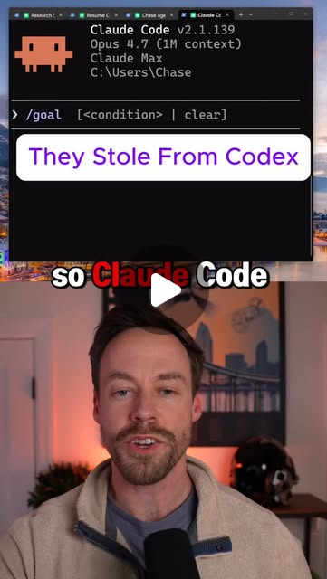

Instagram Reel

Comment “agent” to get my Claude code guides
video transcript (enriched by ClaudeClaw)
Summary
[CAPTION]
Comment “agent” to get my Claude code guides
[VIDEO]
So Cloud Code totally stole this from Codex, but I'm happy because it's the brand new command called forward slash goal. Now, forward slash goal turns Cloud Code into a much better, long-running agentic harness.
[CAPTION]
Comment “agent” to get my Claude code guides
[VIDEO]
So Cloud Code totally stole this from Codex, but I'm happy because it's the brand new command called forward slash goal. Now, forward slash goal turns Cloud Code into a much better, long-running agentic harness. We just do forward slash goal and then we give it a condition to meet. That condition is going to be a couple things. It's going to be some sort of North Star you're shooting for, like you have a very complicated project you're trying to complete, but you need to give it very clear guidance as to what success is going to be. Now that can be kind of tough. So what you want to do when you do forward slash goal is you first want to use plan mode and kind of knock this all out and so you're both on the same page. But this allows Cloud Code to not run for like 20 minutes, 40 minutes. It can run for three hours, five hours, 24 straight hours. People on Codex are doing this for three days. Now, just because it runs a long time doesn't mean it's good, but this definitely is a step forward in terms of handling complex tasks.
View original on Instagram Reel →